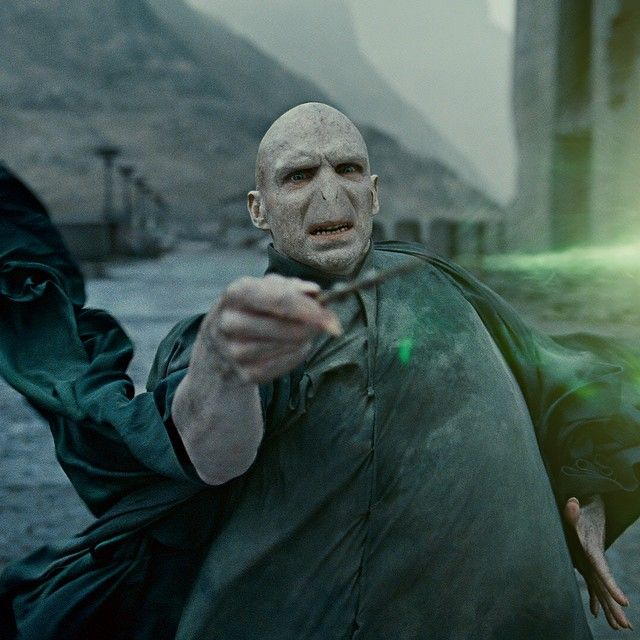

QUAIS AS PRINCIPAIS CARACTERÍSTICAS DE UM SONSERINO?

Os Sonserinos são lembrados, por suas qualidades
peculiares. As principais englobam a ambição,
destreza, astúcia e por uma forte capacidade de liderança,
características muito prezadas pelo fundador.
Além disso, Sonserinos tem a tendência a ser tradicionalistas ao
extremo.
Salazar Slytherin valorizava em seus estudantes, qualidades
como inteligência, desenvoltura, determinação e um certo
"desprezo pelas regras."
Sonserina produziu sua parcela de Bruxos das Trevas, mas ao
contrário das outras casas, os membros não tem medo de admitir
os traços astuciosos, ambiciosos e grandiosos da Sonserina.
Seus alunos são muitas vezes temidos pelas outras casas, mas a maioria
dos alunos da Sonserina são realmente muito gentis (a menos que você faça
alguma coisa e eles levem para lado pessoal, por algum motivo).
FUNDADOR

Salazar Sonserina (ou Salazar Slytherin) era um bruxo puro-sangue,
co-fundador da Escola de Magia e Bruxaria de Hogwarts. Era reconhecido
como um dos melhores amigos de Godric Gryffindor, apenas até o momento
em que seus príncipios a respeito de aceitar apenas alunos puro-sangue
divergiram com os outros fundadores.
Salazar deixou a escola, mas não antes de criar uma câmara secreta
habitada por um basilisco na intenção de "limpar" a escola de todos
aqueles que não tinham sangue puro.
Ele era extremamente talentoso e astucioso, com grandes habilidades
em Legilimência - a habilidade de "ler" mentes -, além de ser um dos
primeiros ofidioglotas de que se tem notícia.
LEGADO

Por anos a casa construiu uma reputação que não é uma das melhores.
Muitos bruxos malignos tiveram como casa a Sonserina, é válido citar
Voldemort e seus Comensais da Morte.
Além disso, a casa costumava repudiar todos os nascidos-trouxas,
com o tempo o legado foi se espalhando ao vento (felizmente),
a casa hoje dá espaço à mestiços e nascidos-trouxas, alguns membros
são contra a discriminação, como Horácio Slughorn e Andromeda Tonks.
E mesmo assim, todas as qualidades ainda estão presentes e
são valorizadas.
MEMBROS NOTÁVEIS

Alguns dos membros mais conhecidos da Sonserina são:
- Merlim
- Tom Riddle (Lord Voldemort)
- Belatriz Lestrange (nascida Black)
- Narcisa Malfoy (nascida Black)
- Andromeda Tonks (nascida Black)
- Régulo Black
- Lúcio Malfoy
- Draco Malfoy
- Leta Lestrange
- Severo Snape
- Toda a família Black (exceto Sirius Black III [Grifinória])
FANTASMAS E DIRETORES DA CASA

O fantasma da Sonserina é o Barão Sangrento. No passado ele se apaixonara por
Helena Ravenclaw, a filha de Rowena, fundadora da corvinal, ele deveria resgatá-la na Albânia.
Quando Helena recusou voltar com ele, o Barão assassinou a moça. Ao ver o que
havia feito, ele tirou sua vida ali mesmo, coberto com o sangue de sua "amada".
O Diretor da Sonserina ao longo da saga é Severo Snape, que na sua época estudando
em Hogwarts, também era sonserino. Outro diretor relembrado ao longo da série é Horácio Slughorn.
CURIOSIDADES

Grande parte dos Sonserinos tem como forte o preparo
de Poções. Além disso, vale ressaltar que a casa abrigou mestiços como
Severo Snape e Tom Riddle, o que significa que, com o passar dos anos,
o tradicionalismo da casa foi sendo quebrado aos poucos. A Casa não é mais feita
exclusivamente para puro-sangues.
Além disso, grande parte dos estudantes da Sonserina é versado nas
artes da Legilimência. Também vale notar que a Casa é a primeira e a
última citada na série de livros.